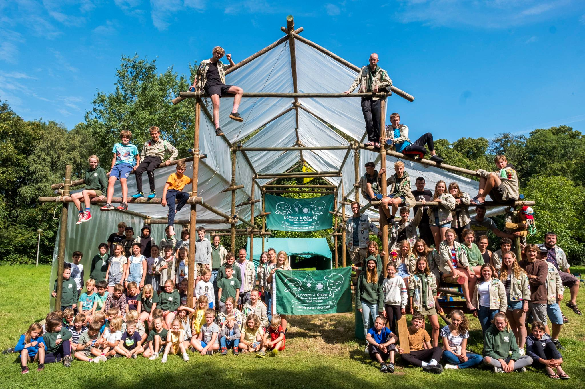

Buiten spelen,
samen groeien.
Scouts Robrecht van Bethune staat al meer dan 65 jaar paraat voor de jeugd van Torhout. Elke twee weken avontuur, vriendschap en een zinvolle zaterdagnamiddag — voor jongens en meisjes vanaf 6 jaar.

Wat er speelt
Op de hoogte blijven van weekends, kampen en het reilen en zeilen van onze groep.
Kapoenen & Welpen
5 tot 6 oktober — één nachtje uit de bol op het domein.
Download de weekendbrief →Jongverkenners & Verkenners
4 tot 6 oktober — een weekend vol avontuur voor de oudere takken.
Download de weekendbrief →Trooper actie
Steun Scouts Stad Torhout gratis via Trooper bij je online aankopen.
Steun ons via Trooper →
Eén hechte vriendengroep, van kapoen tot leiding.
Scouts Robrecht van Bethune staat sinds 1958 paraat voor de jeugd van Torhout en omstreken. We komen elke twee weken samen met leeftijdsgenoten om de zaterdagnamiddag actief en zinvol in te vullen — dicht bij onze leden en hun ouders.
Jongens en meisjes vanaf 6 jaar kunnen al aansluiten. Voor elke leeftijdsgroep voorzien we activiteiten, weekends en kampen op maat, met als doel kinderen en jongeren een onvergetelijke tijd te bezorgen waarin ze, met vallen en opstaan, groeien in zelfstandigheid.
Eén pad, vijf avonturen
Van je eerste spelletjes als kapoen tot je eigen activiteiten geven als jin — elke leeftijd heeft zijn eigen tak.


Het gezicht achter de groep
Zij houden alles mee draaiende — van financiën tot subsidies.

Arne Govaerts
Vreedzame Gedreven Caracara
Babet Pattyn
Harmonieuze Intuïtieve Sint-Bernard